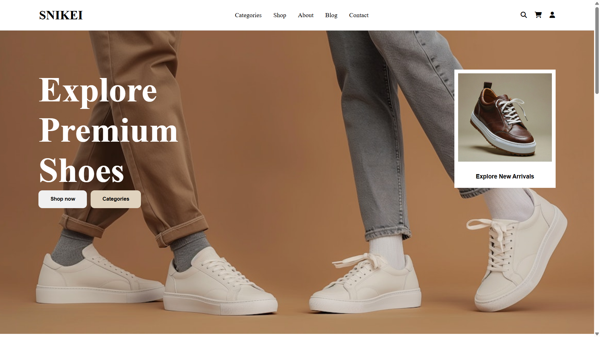

01 / 02E-commerce / PHP + MySQL
Snikei Shop
An e-commerce website with an admin dashboard, focused on a clear and easy-to-use shopping flow.
01 Digital craft / Hanoi, VN
Hi, I’m Duc — a developer who enjoys turning complex ideas into web products that are clear, fast, and full of character.
A little bit about me
I’m a third-year student at VNU University of Science, on my way to becoming a full-stack web developer.
I enjoy learning new technologies, solving challenging problems, and building products with thoughtful experiences. Every line of code is a chance to make something a little better.
A few projects that show how I think, design, and build.
What I work with
A growing toolkit across web development, computer vision, machine learning, and product design.
The road so far
Supermarket · Full-time
VNU University of Science, Hanoi
Have a project in mind?